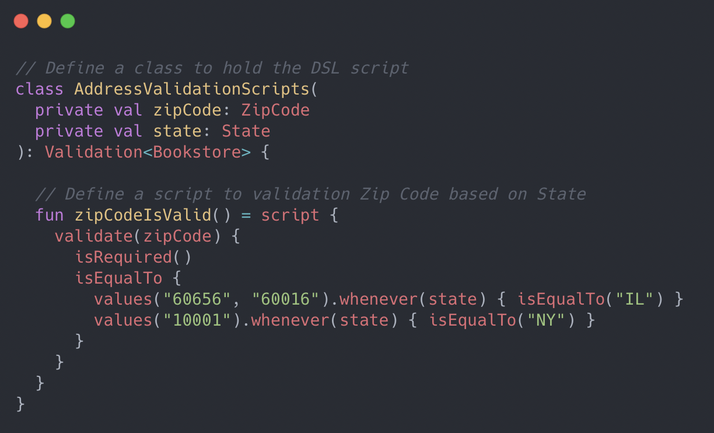
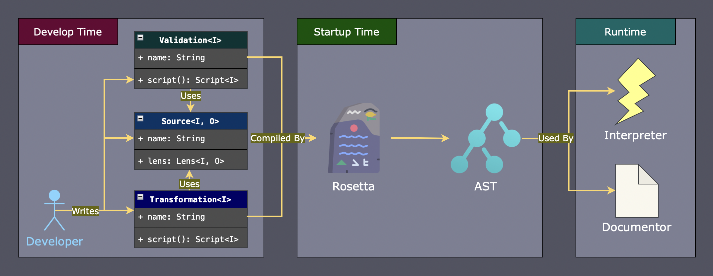
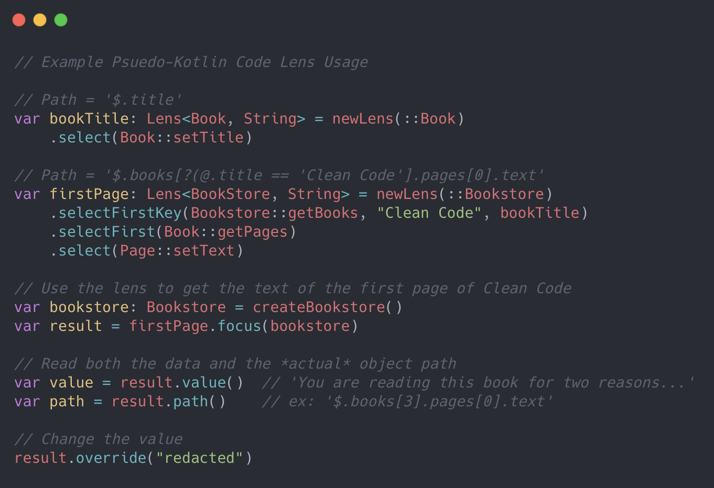
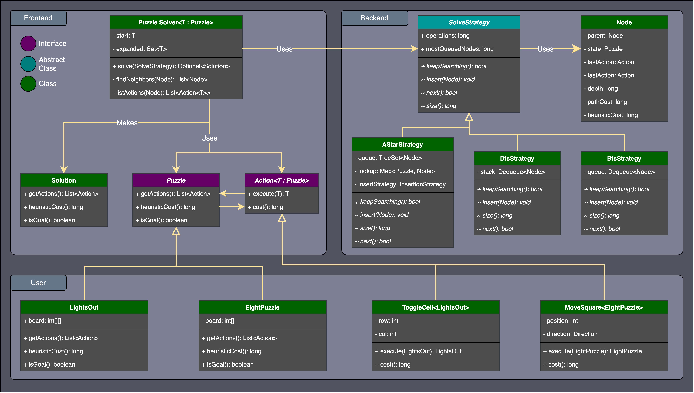

A text-based recreation of Mattel's card game written in C++ and built using my custom text-based game engine Cursen.
Uno features text-based graphics with fluent animations, non-blocking IO, and 4-player online multiplayer.
I developed this game in parallel with its engine, which handles the event loop for the game and rendering the text graphics.
My goal with this project was to create a game with my custom-built UI framework that also included multiplayer over sockets.
A text-based recreation of Mattel's card game written in C++ and built using my custom text-based game engine Cursen.
Uno features text-based graphics with fluent animations, non-blocking IO, and 4-player online multiplayer.
I developed this game in parallel with its engine, which handles the event loop for the game and rendering the text graphics.
My goal with this project was to create a game with my custom-built UI framework that also included multiplayer over sockets.
The first step in developing the game was building the UI screens, which included the Lobby where players connect and the Match screen where the actual game happens.
In Cursen I implemented a State Pattern to handle transition between forms, specifically a stack-of-states where each new Form is stacked onto the previous one.
This easily allowed me to transition from the Lobby screen to the Match screen and then back with original Lobby state restored.
Cursen allowed me to define each UI element as a subclass of its Component class and attach callbacks when that element is interacted with.
To handle multiple game modes while reusing core UI elements I used a Strategy Pattern by defining a Controller abstract class in which different game mode subclasses could implement.
These Controllers override various abstract methods that change the interface, controls, and game flow.
 Implementing the multiplayer support was the greatest challenge in completing the game.
My strategy for connecting players and synchronizing game state was to have one player act as the host who holds the authoritative game state and other players connect to that host.
The host player enforces the game's rules by validating that messages sent by other players are legal game actions and applying them to the game state.
Connecting players simply update their game states whenever the host sends a new one and render animations based on game events.
Implementing the multiplayer support was the greatest challenge in completing the game.
My strategy for connecting players and synchronizing game state was to have one player act as the host who holds the authoritative game state and other players connect to that host.
The host player enforces the game's rules by validating that messages sent by other players are legal game actions and applying them to the game state.
Connecting players simply update their game states whenever the host sends a new one and render animations based on game events.
I implemented my messaging system using a Command Pattern, where each possible message is defined as a class that can be serialized and sent over a socket.
The receiver deserializes the message to the proper class using header information and runs the command.
All changes to the game state get translated into messages that are forwarded to a command queue for distribution.
Depending on the game mode and network role, some messages are looped back to the sender or not sent at all and just executed locally.

Prototype rules engine and embedded domain-specific language developed at CNA that can generate human-readable documentation from coded business rules.
The project was born from a request from the business to explore ideas on how to automate our rules documentation, which at the time was a manually-maintained 300+ row Excel spreadsheet.
Our business rules change constantly but the spreadsheet would not always get updated, causing our documentation to drift further and further out of sync with the code and confusing readers.
I presented a small proof-of-concept to the business and was given the reigns to explore my idea further over the next six months.
My goal with this prototype was to develop a system where our team can write business rules in a CNA-specific DSL that can be interpreted at runtime to validate incoming JSON payloads and automatically generate our Excel spreadsheet documentation.
I started my development by breaking down the overall project into three modules: the frontend, intermediate, and backend layers.
This was the advice I took from a book on writing compilers, where my frontend will handle the parsing the language into an AST and the backend would handle interpreting the AST.
The intermediate layer contains the AST classes.
When our application starts up, Rosetta will look for scripts and parse them into ASTs that can be further processed by the backend services.
{kind=link}
 A notable challenge in developing the frontend module was designing a DSL that could be expressive enough handle many validation scenarios while being intuitive enough so developers can pick it up easily. It was imperative that the DSL be easy to understand so it was a constant tug-of-war which required repeated experimentation and feedback from peers to get right. I ended up choosing Kotlin to create an embedded DSL using its DSL building features which made it possible to leverage our IDEs autocomplete features and type safety when writing rules.
{kind=link}

Properties in the request JSON were specified using Lenses provided by my custom-built Kotlin lens library.
Lenses are a series of setters & getters that are used traverse the request object tree while protecting against null pointer exceptions and generating a JSON path from class metadata.
This allowed the DSL writers to free themselves from the burden of crafting JSON paths or checking for null pointers, the lenses handle it automatically and the resulting scripts are clearer.
My lens library makes use of reflection and Kotlin's reified inline functions to automatically determine from a setter or getter what the underlying field is to generate an object path.
Check out the example pseudo-Kotlin code to see how it works in practice.
{kind=link}
At runtime, the DSL is translated to an in-memory AST that represents the business logic. I used a Visitor pattern to develop an Interpreter and Documentor which would traverse the tree structure to either execute the rules on a JSON request or produce documentation. The Interpreter would handle testing the request generating helpful error messages while the Documentor could output the logic as an Excel spreadsheet or JSON for web consumption.
A port of Midway's Space Invaders written with C# without the use of generics, builtin containers, or other advanced features. Developed as a class project in a class of Software Architecture over a 10-week period as a pedagogical exercise in learning about software design patterns. Students received a minimal game engine to kickstart their development that was able to draw a 2D sprite and play a sound, the rest of the game was up to us. The goal of the class was to not just rewrite Space Invaders but to do so with solid architectural principals that we would learn about throughout the course.
One of the concerns with using a managed language like C# when building a realtime game are pauses caused by garbage collection.
To mitigate this, Object Pools were utilized that were pre-allocated with game objects and would hold onto released objects in an internal Linked List.
This helped prevent the garbage collector from trying to reclaim memory and led to a smoother gameplay experience.
I wrote an ObjectPool abstract base class that would manage the lists of free and allocated objects and subclasses would implement how specific objects are allocated.
A text user interface (TUI) framework developed for C++ that can be used to create games and applications with text-based graphics.
The name Cursen comes from "curses engine" as this project was conceived as a game engine that uses the ncurses library to render text graphics in the terminal.
My goal was to construct a solid user interface framework that I could then use create other text-based applications, such as Uno.
I took some inspiration from WinForms in the way Components are organized within Forms.
Cursen maintains a stack of Forms, each with their own state, and framework users structure their programs as Forms that open other Forms, placing them onto the stack.
User interface elements inherit from a Component abstract base class and each is responsible for defining how it is rendered onto the terminal screen.
Components contain attributes such as position on screen, dimensions, and use a 2D chtype array to store the character data associated with rendering itself.
Cursen provides a few common UI controls builtin such as Labels, TextBoxes, and CheckBoxes that can be composed together to create other components.
An EventManager handles dispatching application events to registered Components that occur in Cursen's event loop.
At runtime, events such as key presses and timer expirations are placed onto an EventQueue to be processed.
I used an Observer Pattern to handle how Components register themselves for callbacks, where events are observed by Components.
A small AI framework written in Java that can be used to solve single-agent games using a generic search algorithm with concrete implementations for DFS, BFS, A*, and more. I developed this program as a challenge to myself during a college Introduction to AI course. One of our first assignments was to build a solver that can solve just the Eight Puzzle game, but our professor remarked that he used to ask students to implement a solver that can solve arbitrary single-agent puzzeles. I thought it would be neat to try and build my solution in a generic way so I can reuse much of the search code for different games. This program implements search algorithms like DFS, BFS, Uniform Cost, A*, and more and provides class interfaces for users to implement their own single-agent puzzles into.
{kind=link}

Text-based C++ program that allows you to create decks of flash cards and quiz yourself.
I wrote this program in 2018 after completing my first college C++ course as an exercise to further understand both C and C++.
I restricted my use of STL, strings, templates, and other advanced features so that I can also further understand the C language, just with the addition of classes.
The program uses entirely text-based graphics to represent various UI components and a virtual cursor for the user to navigate the screens.
Users can create decks of flash cards where each card has a front and back text as well as test themselves with a quiz mode that shuffles the cards.
Decks can be saved to a plain text file and loaded after the application shuts down.

Manual memory management was tough when most of my prior experience was in managed languages like Java and this program needed to use a lot of strings.
To help mitigate this I looked for opportunities to use stack memory whenever I knew at compile time how much data I might need and only use heap memory for polymorphism or Linked Lists.
This was my largest text-based application at the time, with multiple screens, saved data, various visual components, user input, etc.
During this time I still lacked experience in software design patterns for user interfaces, especially for text-based ones so the code is a bit rough around the edges.
However, this experience inspired me to later create a text-based UI framework called Cursen to assist me in making future text games.
 A recreation of the classic game Tetris with text-based graphics written in Python 3.
Created during my Junior year at DePaul University, my goal with this project was to experiment with the curses module and threading to create a text-based realtime game that deals with user-input concurrently with computer input.
A recreation of the classic game Tetris with text-based graphics written in Python 3.
Created during my Junior year at DePaul University, my goal with this project was to experiment with the curses module and threading to create a text-based realtime game that deals with user-input concurrently with computer input.
This project was my first attempt at making a realtime game, previously I've only worked on turn-based games like Chess and Uno.
In order to make my game realtime I needed a way of getting individual key presses without blocking the event loop and a way to update the screen continuously.
I ended up learning about the ncurses Python library which solved both of these problems and gave me a solid text graphics foundation.
I also experimented with Python's threading module in order to make the tetris piece automatically fall when the user waits long enough.